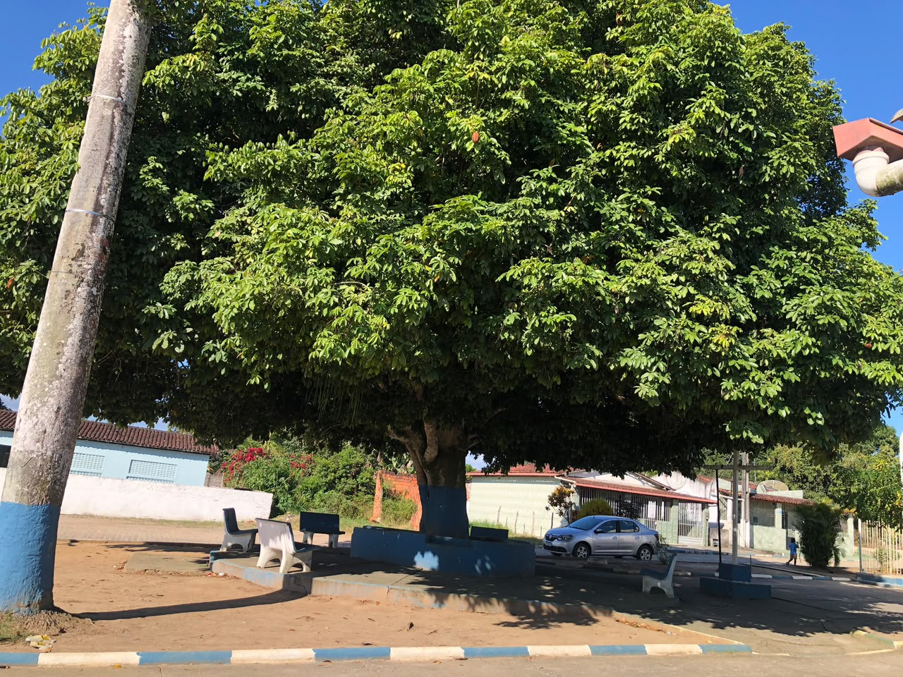
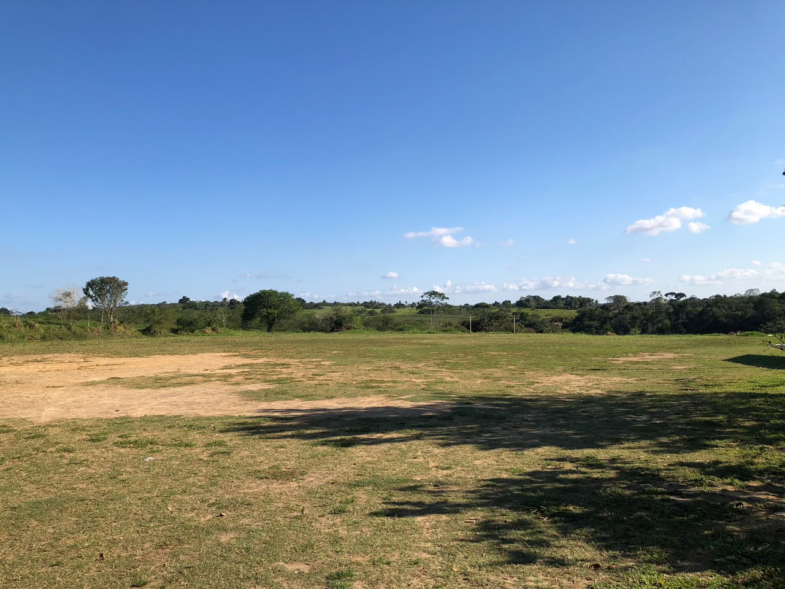
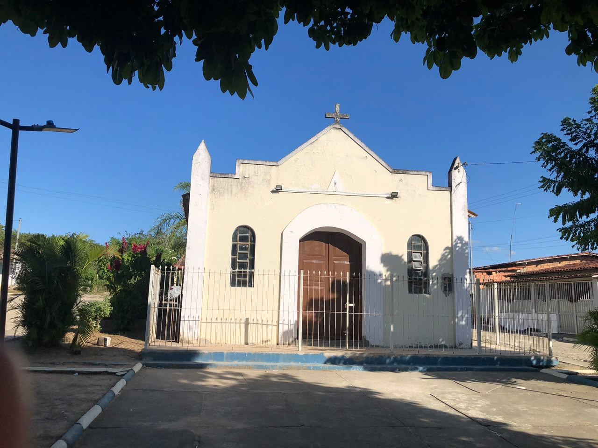
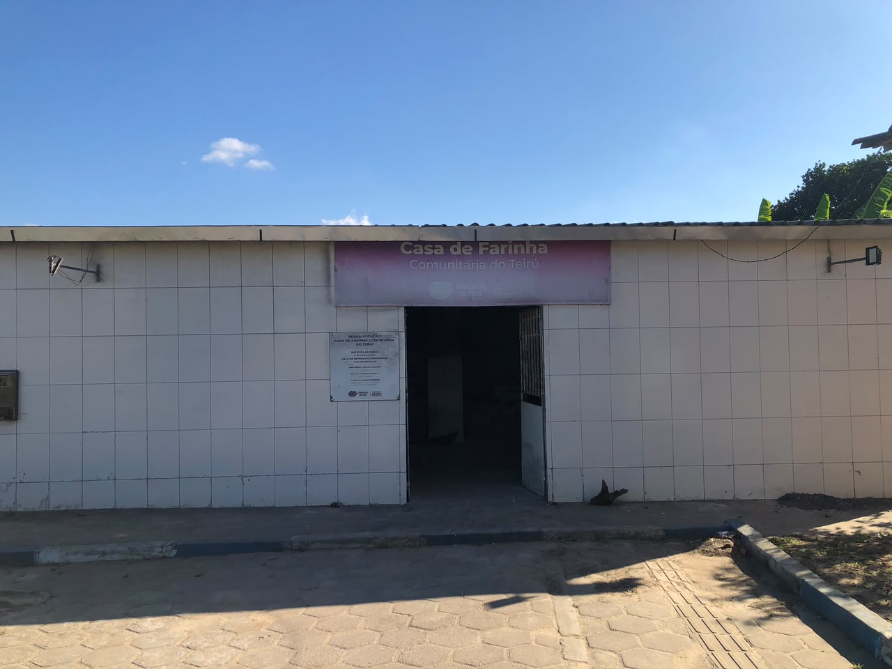
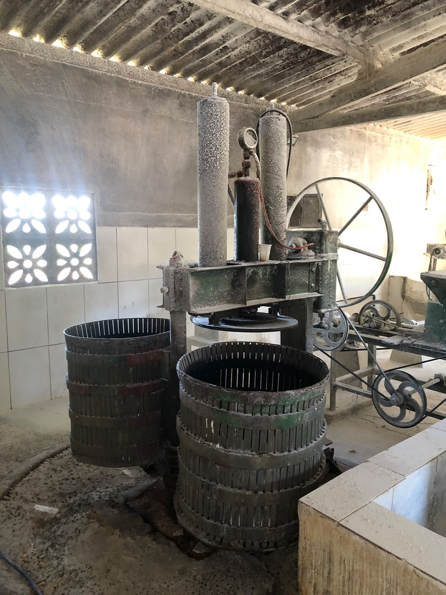
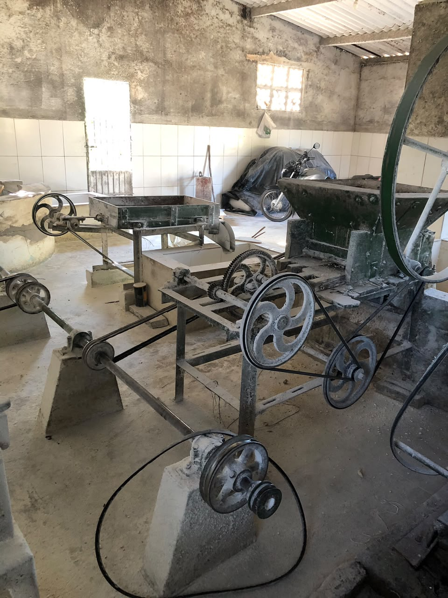

Praça
Espaço registrado durante o percurso.

Memórias de chegadas, transformações e devoção a Maria Concebida.
A conversa com Seu Cristino, com a participação de sua esposa, Dona Lúcia, registra memórias sobre a chegada da família ao Teiru, o crescimento da comunidade e a devoção a Maria Concebida. As falas abaixo são trechos da entrevista e aparecem relacionadas aos lugares fotografados durante o trabalho de campo.
Seu Cristino recorda que a família deixou a região onde vivia e adquiriu uma propriedade no Teiru. Em sua narrativa, a mudança aparece associada à seca e às dificuldades de permanecer no lugar anterior.
Seu Cristino “Era seco demais lá. O inverno era bom, mas chegou no verão, meu filho... chegou no mês de setembro em diante e era só verão. Era seco, seco, seco, trincando.”
Fonte oral • entrevista com Seu Cristino, com participação de Dona Lúcia.
Na memória do casal, a paisagem do Teiru mudou com a chegada de novos moradores e a construção de casas.
Seu Cristino “Quando a gente chegou para aqui, só tinha mesmo a fazendona ali.”
Dona Lúcia “Era poucas casas.”
Seu Cristino “O povo foi chegando, gente fazendo umas casinhas [...] Aí tornou uma vizinhança bem grande aqui.”

A festa de Maria Concebida aparece na entrevista como uma tradição anterior à chegada da família de Seu Cristino ao Teiru.
Seu Cristino “Desde quando eu cheguei para aqui que existia essa festa de Maria Concebida.”
Dona Lúcia “É coisa dos antepassados, há muitos longos anos.”
O memorial preserva a denominação “Maria Concebida” usada pelos próprios moradores na entrevista.

Dona Lúcia associa a formação de parte da vizinhança à doação de terras destinada ao culto de Maria Concebida. Seu Cristino confirma essa memória durante a conversa.
Dona Lúcia “Uma mulher bem antiga, ela doou seis tarefas de terra para poder fazer o culto de Maria Concebida. Aí fez uma capelinha, depois foi fazendo a igrejinha.”
Seu Cristino “O terreno é todo da santa ali.”
A doação das seis tarefas e a expressão “terreno da santa” são apresentadas aqui como memória oral registrada na entrevista.
Além dos lugares relacionados diretamente à entrevista, o trabalho de campo registrou outros espaços da comunidade.
Espaço registrado durante o percurso.
Parte da paisagem atual da comunidade.

A fachada identifica o equipamento como Casa de Farinha Comunitária do Teiru.
O espaço e seus equipamentos integram o registro material produzido durante a visita.


Entrevista realizada no Teiru, Conceição da Feira, Bahia, no âmbito do projeto Comunidades de Memória. O registro audiovisual integra o conjunto de fontes orais reunidas pelo projeto.
Fonte oral audiovisual • entrevista com Seu Cristino.
Entrevista realizada no Teiru, Conceição da Feira, Bahia, no âmbito do projeto Comunidades de Memória. O registro audiovisual integra o conjunto de fontes orais reunidas pelo projeto.
Fonte oral audiovisual • entrevista com Dona Lúcia.
Entrevistado principal
Seu Cristino
Participação
Dona Lúcia, sua esposa
Local
Teiru, Conceição da Feira, Bahia
Acervo
Comunidades de Memória • PIBID História/UFRB
Entrevista com Seu Cristino, com participação de Dona Lúcia. Os trechos apresentados nesta página foram selecionados a partir desta gravação.